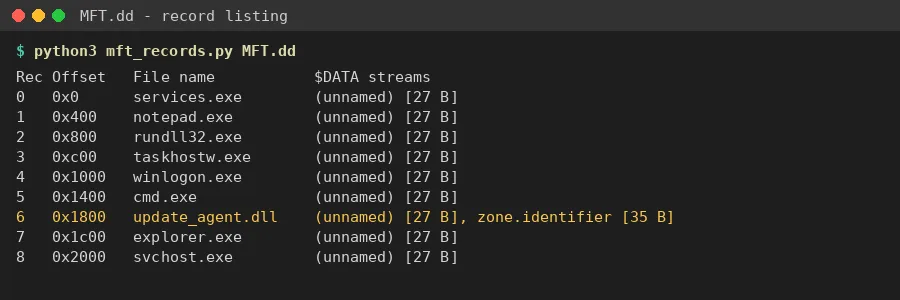
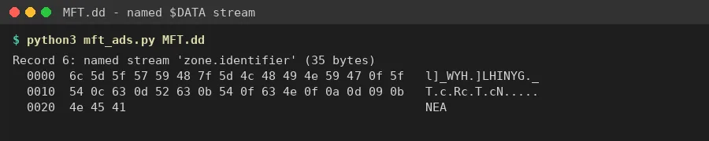
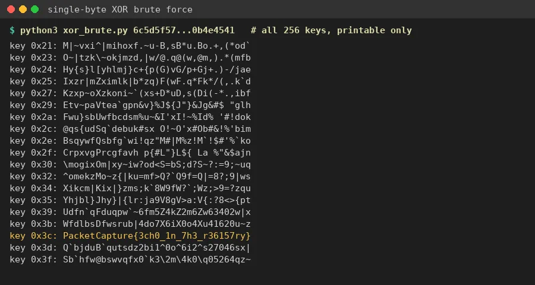

01Start point: MFT.dd (9 KB).
- What I found: the file begins with "FILE" signatures, so it is a raw dump of NTFS Master File Table records. It holds 9 records: services.exe, notepad.exe, rundll32.exe, taskhostw.exe, winlogon.exe, cmd.exe, update_agent.dll, explorer.exe and svchost.exe.
- Thinking: every record's $DATA is the same filler text ("System file content holder."), so the real content had to be in whichever record didn't match the rest.

02Pivot: the odd record, update_agent.dll.
- What I found: this is the only record with a second, named $DATA attribute. That is an Alternate Data Stream called "zone.identifier".
- Thinking: ADS are a classic hiding spot because Explorer and `dir` don't show them. The real Windows stream is "Zone.Identifier" and holds plain text like "[ZoneTransfer] ZoneId=3". This one held 35 bytes of unreadable data, so it was disguised as something harmless.

03Pivot: the hidden stream's bytes.
- What I did: pulled the 35 bytes out with Python: 6c 5d 5f 57 59 48 7f 5d 4c 48 49 4e 59 47 0f 5f 54 0c 63 0d 52 63 0b 54 0f 63 4e 0f 0a 0d 09 0b 4e 45 41
- Thinking: no zlib, base64 or other file signature, but the values are clustered like text. That points to a single-byte XOR.
04Decoding.
- What I did: tried all 256 single-byte XOR keys and kept only the outputs that were fully printable.
- Result: key 0x3C gives PacketCapture{3ch0_1n_7h3_r36157ry}. Every other printable output was gibberish.
